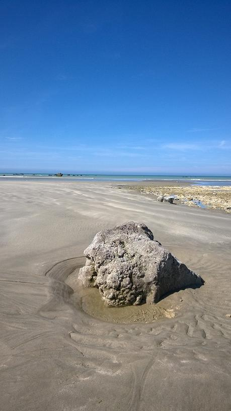

|

|
CHANT DE LA SIRENE 2
La mer mieux que moi connaissait le chemin.
Mes doigts, filez, car je suis le passé, l'aveugle.
La navette, la faux et la doloire Connaît la toile, l'épi tapi
Et quel dieu guète sous la gangue.
Fidèle à la douleur, docile au silence,
J'écoute battre au fond de mes artères
Les cohortes d'un monde en marche.
Que je sois la coupe où verser le vin.
Et qu'importe si l'ivresse est au buveur
Puisque je suis le pont.
Que je sois le bronze sur le foyer
Où gazouille la noce du feu et de l'eau.
Et l'arc qui en lui même contient
Le bois, le dard et la cime étoilée.
Que je sois l'au-delà de mon bonheur
Les brebis dorment au soleil d'Ithaque.
L'ombre des nuages tigre la mer impassible.
Et voilà qu'un envol de mouettes vacille sur la mer.
Sous le clapotis des vagues et des crabes
Retentissent les promesses de départs.
Michel Galiana, 24 mai 1978
.
.
.
|
MERMAID'S SONG 2
Better than I did, the sea knew the route.
Fingers, spin for me: I am the blind past.
Thus shuttle, scythe, adze know better about
Weft and crouching corn, gods hiding in casks.
I'm prone to silence and faithful to grief,
Listening to cohorts of onmarching worlds
Whose trample resounds in my arteries,
I shall be the cup where the wine is poured.
The drinker may be intoxicated :
Since I bridge a gap, what does it matter?
I shall be the bronze urn over the hearth
Where, wedded to fire, the water babbles.
I shall be the bow where have merged to one
Tautened wood and shaft and starlit summit.
And I shall be my blithe world's otherworld:
The yews slumbering in Ithaca's sun,
Streaked with shades of clouds, the sea impassive
Till a flight of gulls over it wavers.
Among lapping waves and teeming crabs are
Sounding promises of near departures.
24th March 1978
Transl. Christian Souchon, 2015
Photo: Dominique Borderie, 2015
|